Sobre nós
Seja bem vindo(a) ao nosso site, Vida dos Pets. Nele você encontrará muitas informações relacionadas à vida do seu bichinho de estimação e recomendações sobre como melhorar o seu relacionamento com o seu animalzinho. Esperamos que esse site seja útil para você :)
Para uma melhor experiência, escolha uma música para ouvir enquanto desfruta do nosso conteúdo.
Pitty - Serpente
Elis Regina & Tom Jobim - Aguas de Março
Roberta Campos e Nando Reis - De Janeiro A Janeiro
Alimentação
Assim como os humanos, cachorros também precisam de uma dieta balanceada. Entretanto, o que pode ser bom e fazer bem para um humano, nem sempre atende às necessidades nutricionais de um cão, ou pior, pode até ser prejudicial para o bichinho.
Rações específicas para as características do seu animal (se ele é filhote, adulto ou idoso, se é de grande, médio ou pequeno porte, se tem algum problema de saúde etc.) são a forma mais prática e segura de alimentar o cão. Esse tipo de alimento é fabricado para oferecer todos os nutrientes essenciais para o desenvolvimento saudável do bichinho. Além disso, quando os cachorros mastigam a ração, o atrito faz com que eles acabem limpando um pouco os dentes, o que ajuda a prevenir problemas como tártaro.
A ração é a escolha de alimentação para cachorros mais garantida e fácil, pois ela é feita para suprir corretamente as necessidades nutricionais do animal, sem excessos ou carências de nenhum nutriente. Também recomenda-se o uso de petiscos para agradar o seu animalzinho.
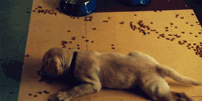
Saúde e Higiene
Todo pet lover deve estar por dentro de algumas informações cruciais para manter seu cãozinho sempre saudável e completamente feliz, garantindo a sua saúde, higiene e segurança, fazendo com que a qualidade de vida do cão seja bastante alta.
A seguir, as principais dicas, para que você possa colocar em prática e garantir muita alegria e saúde para o seu amigão!
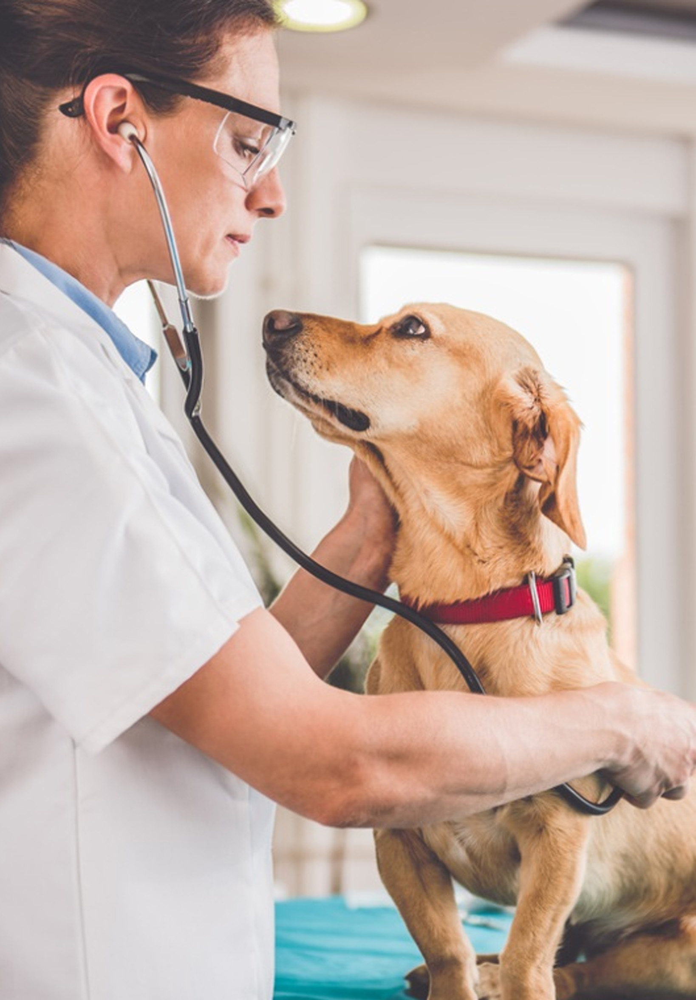
1. Não esqueça de fazer a vacinação
2. Forneça uma alimentação de qualidade
3. Cuide dos vermes, pugas e carrapatos
4. Incentive a execução de brincadeiras
5. Leve o cãozinho periodicamente ao veterinário
6. Dê muito carinho e amor
7. Deixe o ambiente sempre limpo e adequado
8. Treine e eduque o seu cãozinho
9. Dê banho a cada duas semanas
10. Leve se cão ao petshop para tozar, cortar unhas ...
Ambiente
Nossos amigos peludos também precisam de um lar doce lar confortável e seguro. É preciso garantir que o cachorro tenha seu espaço, além do tamanho certo de casa para sua raça. Ele precisa de uma área só dele no apartamento ou na casa, com seus brinquedos, sua casinha e até um espaço para fazer suas necessidades quando você não tiver tempo para um passeio com ele. Se caso você tiver uma área externa e recursos para a construção de um canil para abrigar o seu cachorro – ou cachorros – é preciso considerar alguns fatores como a luz solar, uma necessidade que o seu cãozinho tem para fortalecer os ossos. Além disso, a luz do sol ajuda a esterilizar o ambiente.
Cães são animais de toca, por isso gostam e precisam ter uma casinha coberta, que transmita segurança. O tamanho ideal tem que dar espaço suficiente para que eles consigam ficar em pé sobre as quatro patas e deem uma volta sobre o próprio corpo dentro da área. Mas o espaço tem que ser um pouco grande para que o dono consiga limpá-lo sem muitas dificuldades.
Utensílios mais importantes
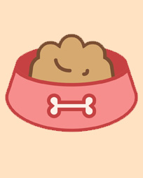
Comedouro
Você precisa ter um comemouro para alimentação e outro para água. Existem tigelas de materiais e formatos diferentes. O tamanho vai depender do tamanho que seu peludo tem.
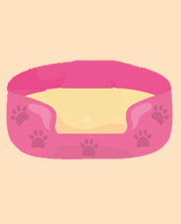
Caminha
A caminha é o refúgio do cachorro, onde ele vai quando precisa descansar e quando quer se sentir protegido. Compre uma que o acomode confortavelmente.
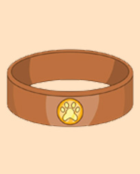
Identificação
A coleira com identificação deve estar no seu cãozinho o tempo todo, porque caso ele consiga fugir, quem o encontrar vai conseguir entrar em contato com você.
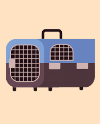
Gaiola
Quando você precisar levar seu peludo para algum lugar, como ao veterinário ou a um parque mais longe, você precisará de uma gaiola para levá-lo com segurança
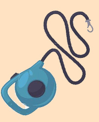
Coleira
Ao sair, é fundamental que o peludo esteja de coleira, para ficar seguro e aproveitar melhor os passeios com o dono.
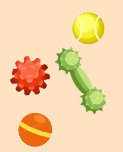
Brinquedos
Brinquedos são ótimos para o cãozinho usar junto com você, assim como para se distrair e diminuir a ansiedade quando ele estiver sozinho.
Recomendações
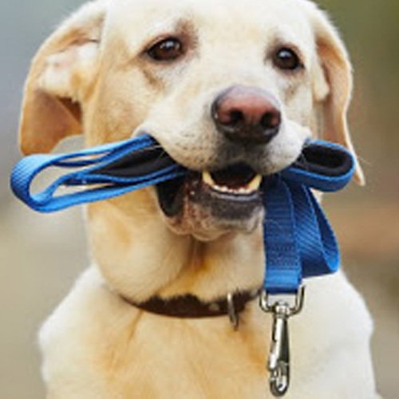
Leve seu cão para passear
Um cachorro preso dentro de casa não faz bem nem a ninguém. Isso influencia na saúde do animal e, consecutivamente, no bem-estar de todos. E o seu cãozinho faz parte da família, não é? Então, o relacionamento entre vocês depende dos mesmos mecanismos que mantêm a família sempre unida: boas conversas, companheirismo, amor e, claro, bons passeios! Sendo assim, é importante passear com cachorro com frequência.
Ensine a usar o tapetinho
O tapete higiênico para cachorro é uma alternativa muito prática. Esses tapetes foram criados para evitar o mau cheiro e a sujeira, oferecendo mais conforto ao animal e mais comodidade aos donos. Toda vez que o seu cãozinho urina no tapete higiênico, ela é rapidamente absorvida, neutralizando o odor e evitando o mau cheiro. Não há contaminação da superfície pelo xixi, mantendo o ambiente mais limpo.
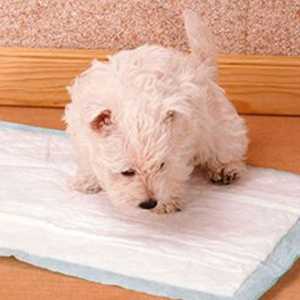
Crie uma rotina
Para os cãezinhos, ter hábitos é muito importante: eles são capazes de reduzir a ansiedade e o estresse, proporcionando benefícios físicos e psicológicos. Portanto, é bom saber como e por que organizar a rotina de cachorro, para promover uma vida muito melhor a esses bichinhos. Com a rotina (sabendo quando vai comer, passear e brincar), o cachorro se torna mais seguro e disciplinado e melhora a sua interação com o tutor.
Cuide da saúde do seu bichinho
Para manter o seu amigo saudável é necessário, cuidar da vacinação, levá-lo ao veterinário periodicamente, dar muito carinho e atenção, ajudá-lo com a higiene, fornecer uma alimentação de qualidade, deixar o ambiente sempre limpo e adequado, evitar pulgas, carrapatos e vermes, entre muitos outros cuidados que um cachorro precisa. Portanto, pense bem antes de adotar um e arque com as responsabilidades.
Um vídeo para te deixar feliz
Dados
Abaixo está uma estimativa da quantidade de cachorros que temos no Brasil e em qual situação eles vivem.
| Situação |
Estimativa |
| Abandonados |
20000000000 |
| Adotados |
5020040 |
| Comprados |
10540320 |
| Total |
20015560360 |
Saiba Mais
Como prevenir doenças caninas
Veja 8 táticas simples para seu cachorro não passar doenças, nem ser infectado
Saiba Mais
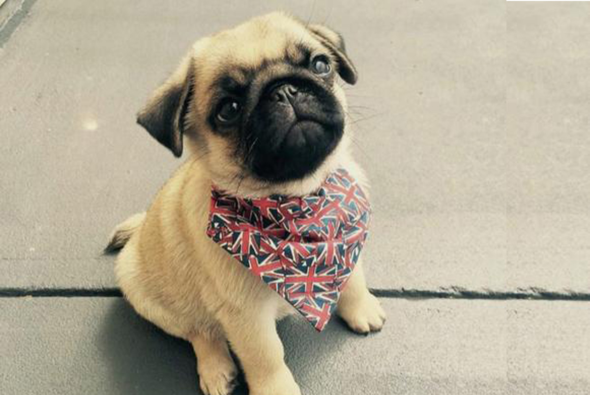
Mamãe ou papai de primeira viagem?
Veja 7 dicas para quem quer adotar um animal de estimação pela primeira vez
Saiba Mais
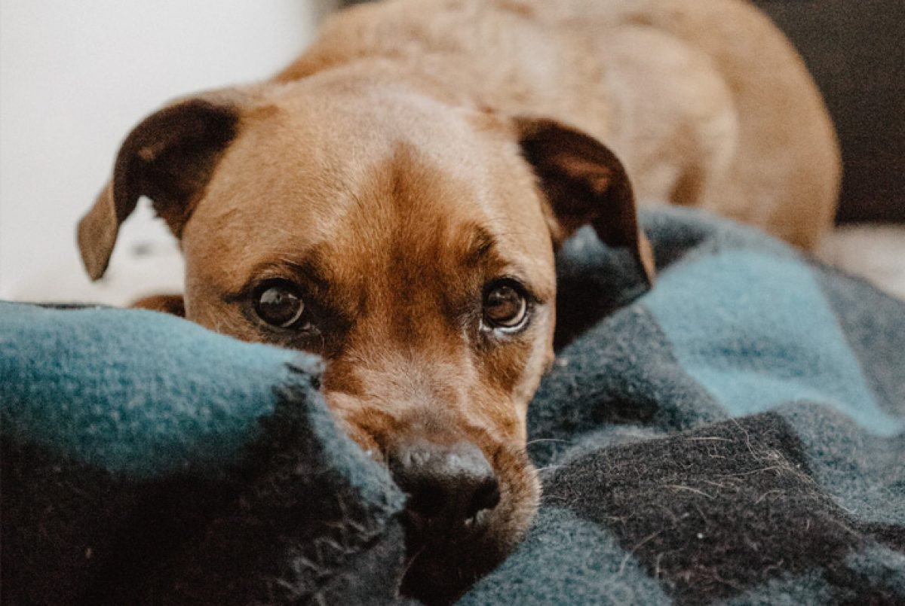
Cinomose em cães, saiba como prevenir
Veja como proteger o seu bichinho dessa doença grave e altamente contagiosa
Saiba Mais